Care Compass: Carer guide
This guide is for nurses and support workers. It shows you, step by step, how to see your shifts, look up the people you care for and tick off care as you give it. Take it one step at a time. You cannot break anything by looking around.
The pictures use made-up example people. Aisha Rahman is the carer, and Margaret Doyle is one of her patients.
Web address: your organisation will tell you the address of the website. Write it down and keep it somewhere safe.
Words used in this guide
| Word | What it means |
|---|---|
| Patient | A person you care for. |
| Shift | A block of time your organisation has rostered you with a patient. |
| Event | Anything on a patient's calendar, such as a medication time. |
| Task | An event you must tick off once you've done it. |
1. Getting started
You can't sign up by yourself. Your organisation adds you, and Care Compass sends you an email titled "You have been invited to Care Compass".
- Open the email and click Set your password.
- Choose a password of at least 8 characters.
- Click Save password.
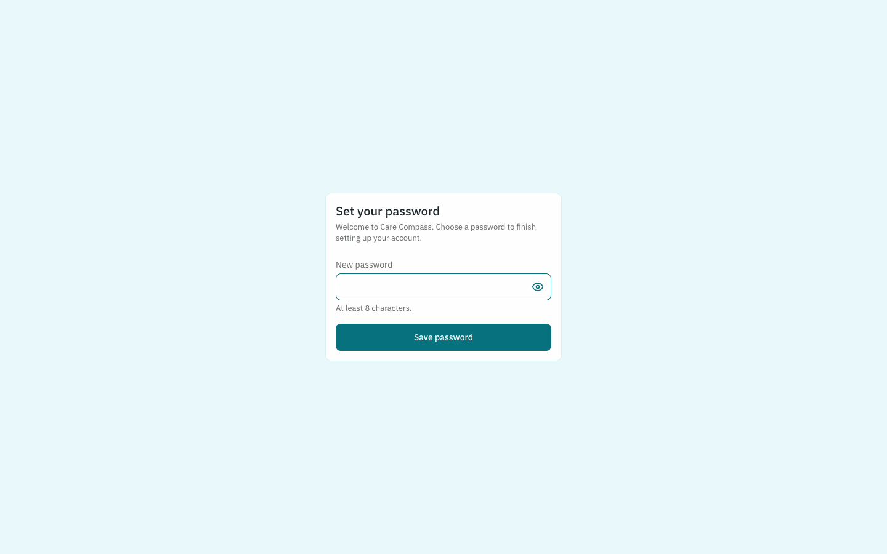
The link in the email works only once and stops working after a while. If it has expired, ask your organisation to send the invite again.
Signing in next time
Go to the web address, enter your email and password, and click Sign in. If you forget your password, click Forgot password? and Care Compass will email you a link to set a new one.
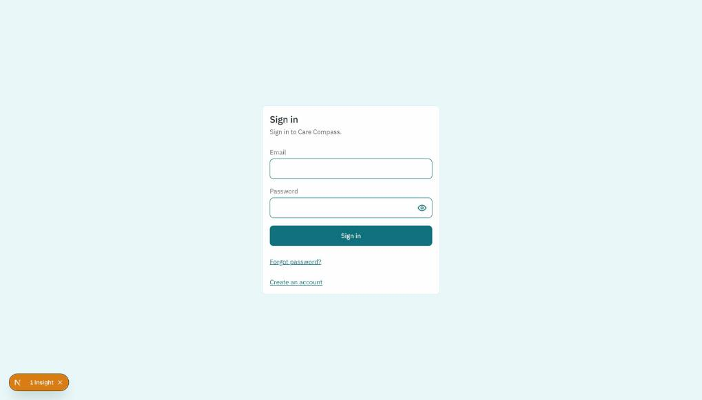
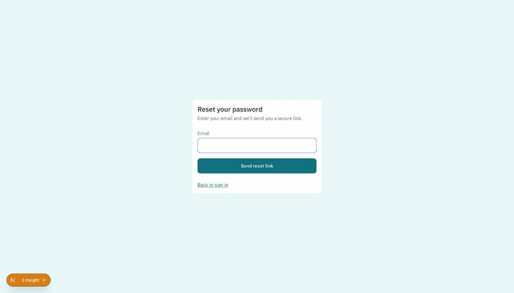
2. Home: your shifts
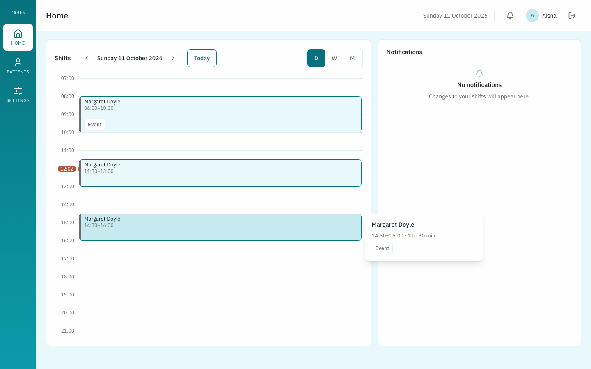
Shifts shows when you're rostered and with whom.
- Click D, W or M to see a day, a week or a month.
- Use the arrows to move back or forward. Today jumps back to now.
- Click a shift to open that patient's page.
Notifications tells you when your organisation adds or cancels one of your shifts. The bell at the top of the screen shows a number when you have messages you haven't read.
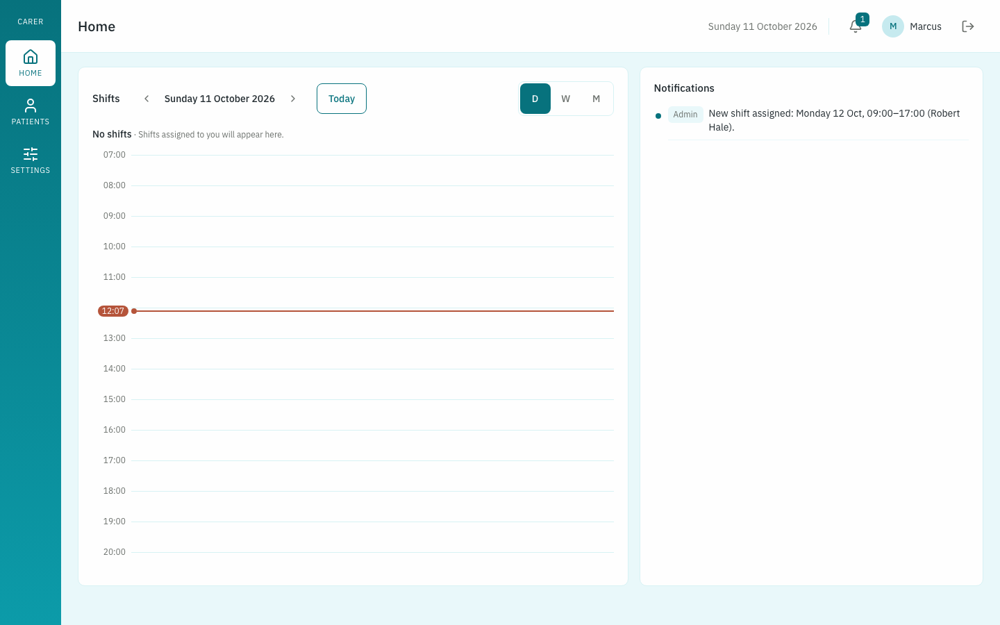
3. Patients
Click Patients in the left menu to see everyone you have a shift with.
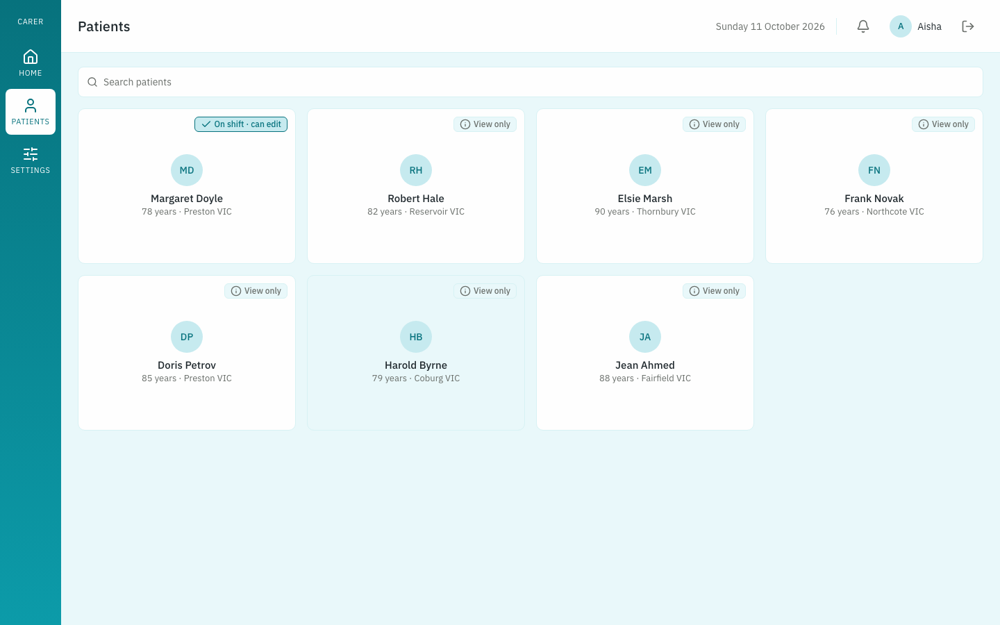
Each patient shows one of two labels:
- On shift · can edit: your shift with them is happening now, so you can tick off care and update their details.
- View only: you have a shift with them later. You can read everything but can't change anything yet.
A patient appears here once you have a shift with them. They drop off the list after your last shift with them ends.
4. A patient's pages
Click a patient to open their pages. The tabs along the top are:
- Home: today's events, overdue tasks and recent activity
- Client Details: what you need to know about them, such as habits and medical history
- Documents: their files, such as care plans and referrals
- Calendar: all their events, and where you tick off care
- Care log: every task, who did it and when
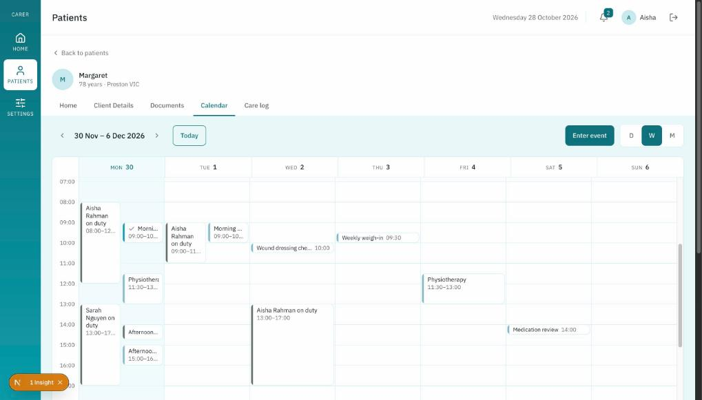
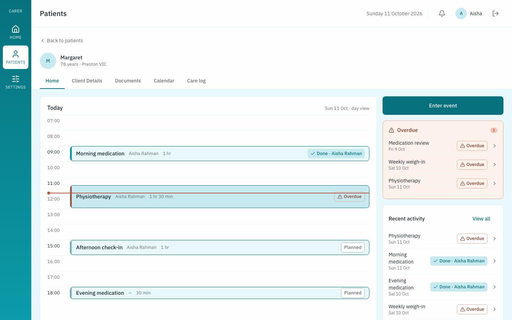
Click Back to patients to return to your list.
5. Ticking off care
You can only tick off a task while your shift with that patient is happening.
- Open the patient and click the Calendar tab.
- Scroll down to the Tasks box. It lists the tasks for the day you've chosen.
- Tick the box next to a task once you've done it.
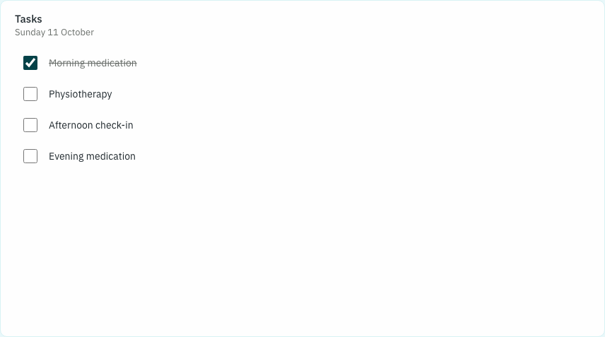
The task is crossed out and marked Done with your name. The family and your organisation can see who did it and at what time.
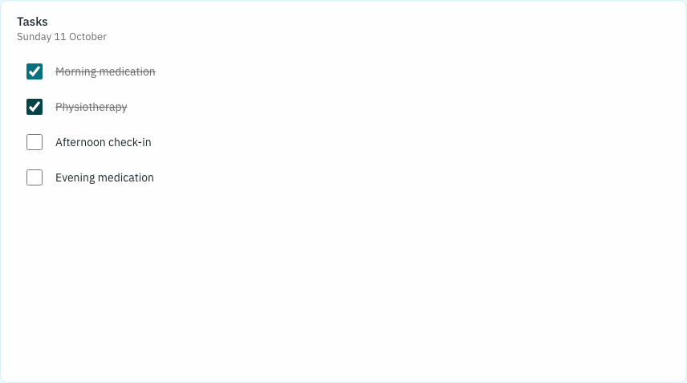
If you ticked the wrong task, click the box again to untick it.
When you're not on shift
Outside your shift, the patient's pages show a View only note and there are no tick boxes.
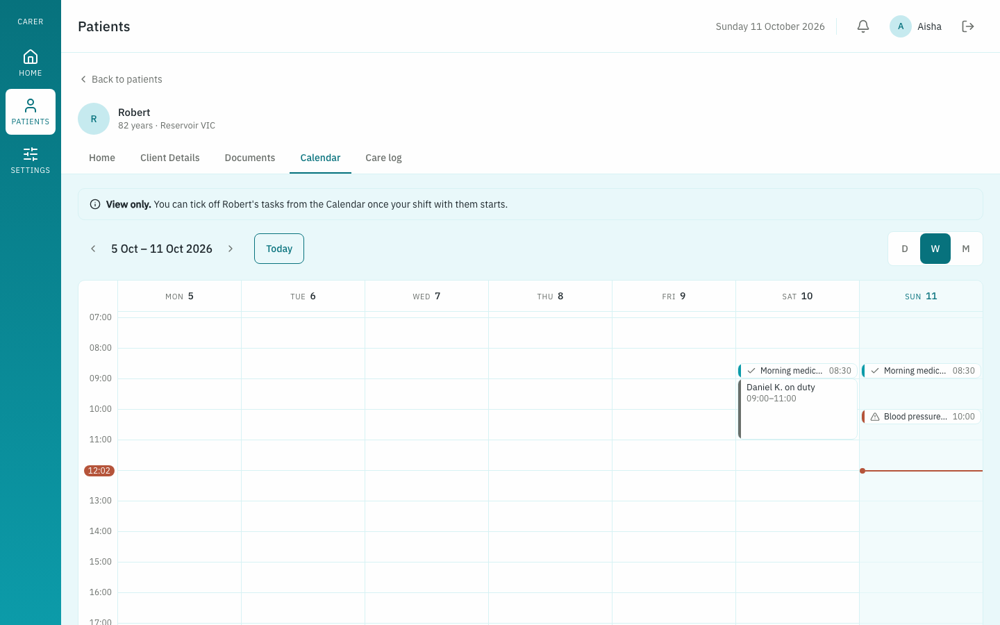
Missed tasks
A task that isn't ticked off by its time shows as Overdue. If it's still not done 30 minutes after it was due, Care Compass emails the family and your organisation's managers.
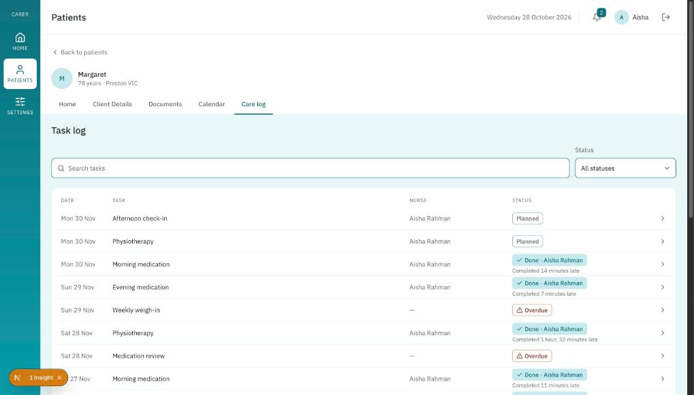
6. Adding and changing events
While you're on shift you can add events to a patient's calendar and change them, the same way the family does.
- To add one, click Enter event on the patient's Home or Calendar tab, fill in the form and click Save event.
- To change one, click the event, then Edit event.
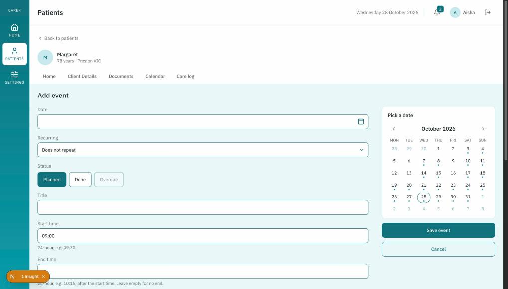
7. Client Details and Documents
Client Details has the patient's description, habits and medical history. During your shift you can click Edit on a section to update it, and Add file to upload a document.
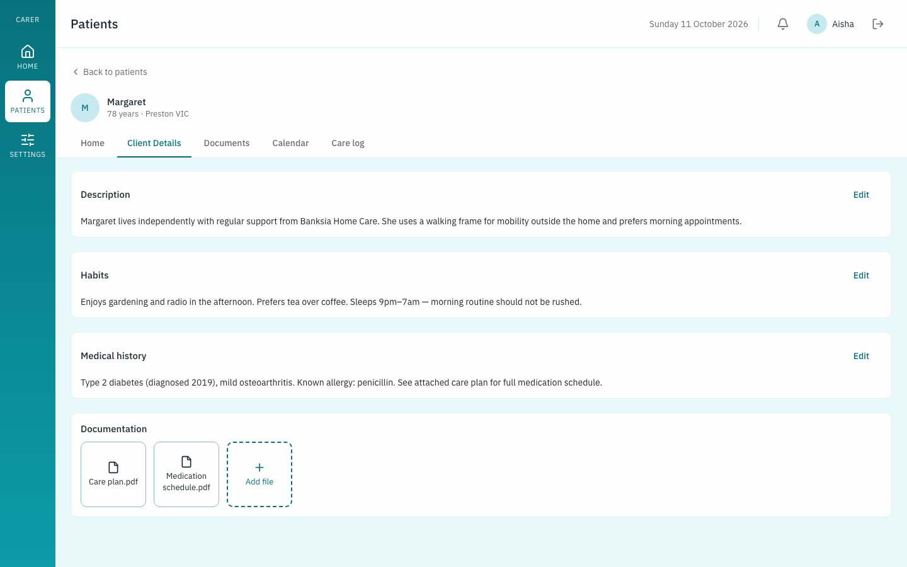
Documents lists all of the patient's files. You can open or download them whether or not you're on shift. Use Download all to save every file in one go.
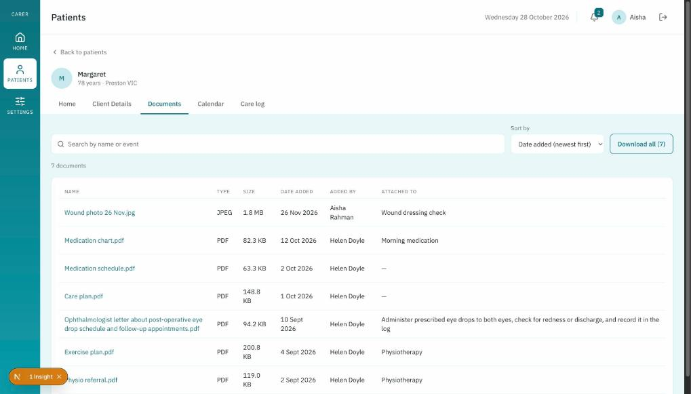
8. Settings
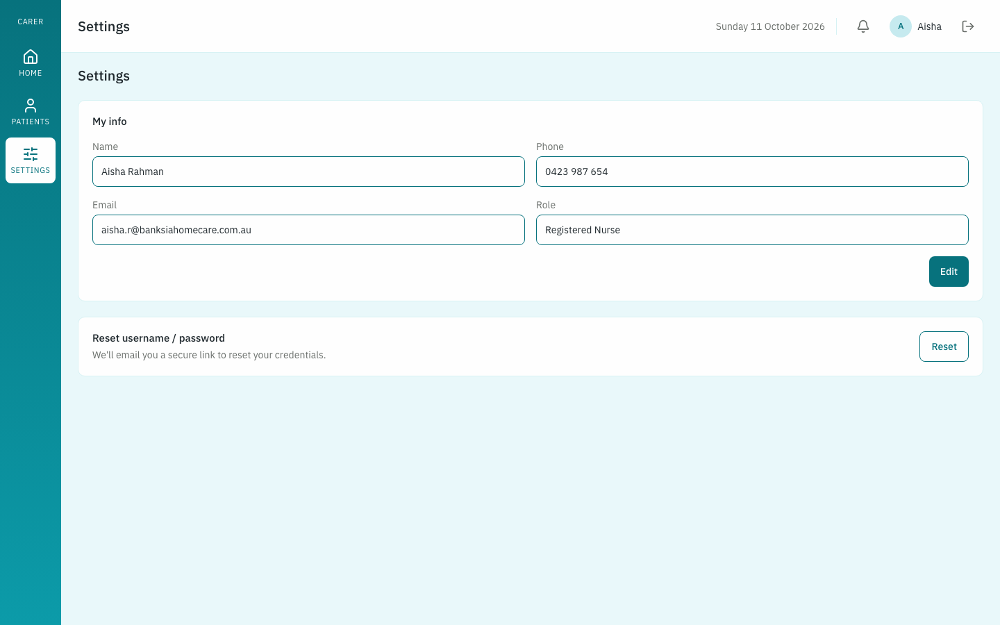
- My info: click Edit to update your details.
- Reset username / password: click Reset and Care Compass emails you a link to set a new password.
To sign out, click the arrow icon in the top right corner.
Questions people often ask
| Question | Answer |
|---|---|
| I did not get my invite email. | Check your spam folder, then ask your organisation to send the invite again. |
| I cannot tick off a task. | You can only tick off tasks while your shift with that patient is happening. Check the label on the Patients page: it must say On shift · can edit. |
| I ticked the wrong task. | Click the box again to untick it. |
| A patient has disappeared from my list. | Patients drop off the list after your last shift with them ends. Ask your organisation if you expected another shift. |
| My link to set a password has stopped working. | The link works only once and expires. Ask your organisation to send a new invite, or use Forgot password? on the sign-in page. |
Need help?
Ask your organisation's manager first.